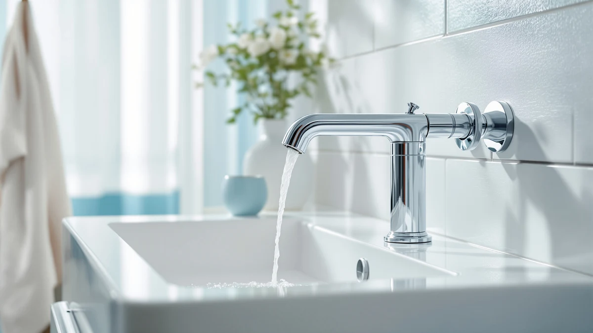

The Best Wall-mounted Vanity Faucets (2026)
Prices and picks verified as of July 2026. Independent, reader-supported reviews.


Quick Answer
Among the best wall-mounted vanity faucets we compared, the Delta Nicoli Brushed Gold Faucet gives you the cleanest look and the most durable build for $199.90. If you want a similar warm finish for less, the Bathroom Faucets for Sink 3 from Hurran is a close, less expensive runner-up at $59.99. Shoppers on a tight budget can start with the KHQF 4-inch faucet at $23.59.
Our pick: Delta Nicoli Brushed Gold Faucet, $199.90 Check Price on Amazon
Bottom line: our top pick is the Delta Nicoli Brushed Gold Faucet 3 Hole at $199.90. The best budget option is the KHQF 4" Bathroom Sink Faucet at $23.59.
Things to Know Before You Buy
- True wall-mount vs. deck-mount. A genuine wall-mounted faucet needs plumbing roughed into the wall behind the vanity, so budget for a plumber. Most of the picks below mount on the sink or vanity deck, which you can install yourself.
- Measure your holes first. Count your faucet holes and measure the spacing before you buy. Single-hole, 4-inch centerset, and 8-inch widespread vanities each need a different faucet.
- Match the finish to your hardware. Brushed gold and matte black read as more current than polished chrome, but they should match your towel bars and drain trim.
- Brass bodies outlast zinc alloys. A solid brass core resists corrosion and holds its finish longer than the lightweight metals used in some low-price faucets.
- Budget for the extras. Prices here run from $23.59 to $199.90, and you may still need supply lines, a pop-up drain, or plumber's tape.
The best wall-mounted vanity faucets give a small bathroom vanity a clean, floating look, since nothing bulky crowds the basin. That look comes with a catch worth knowing before you shop: a genuine wall-mount installation runs its supply lines inside the wall, which usually means hiring a plumber and opening drywall. For most people shopping this category, a deck-mount or vanity-mount faucet with the same modern lines delivers the look for a fraction of the effort.
We compared seven faucets that cover that range, from a $23.59 KHQF centerset up to a $199.90 Delta Nicoli with a brushed gold finish. Our top pick is the Delta Nicoli, because its brass body and smooth single-lever control justify the price for anyone who wants a designer faucet that will still work well in five years. If you want the same warm finish for less, the Bathroom Faucets for Sink 3 from Hurran is a close, less expensive alternative.
Each pick below comes with its honest tradeoffs, plus a plain guide to what actually separates a true wall-mount install from the vanity-mount faucets most bathrooms use instead. You want one faucet that fits your vanity's hole spacing, your finish, and your budget, and this guide is built to help you land on it.
Why You Should Trust Us
I am Ilane Tall, and I cover bathroom fixtures for Best Bathroom Faucets. To shortlist the best wall-mounted vanity faucets and their deck-mount alternatives, I read the full spec sheets, the mounting requirements, and the verified buyer reviews for each model here. I pay attention to the details a listing photo skips over: the valve type, the body material, the hole spacing, and how the finish holds up after months of daily use.
We make money through affiliate links, which you can read about in our disclosure. That arrangement does not change which faucets we recommend. When a product has a real drawback, such as a brand with limited warranty support or a finish that shows scratches, we say so instead of glossing over it.
How We Picked
We started with a wide pool of the best wall-mounted vanity faucets and their deck-mount alternatives, then narrowed it to seven. Three filters did most of the work. First, body material: we favored brass cores over lightweight zinc, since brass resists corrosion better under daily water contact. Second, hole spacing variety: we kept single-hole, 4-inch centerset, and 8-inch widespread options in the mix so this guide works for more than one vanity layout. Third, finish durability, because a gold or matte coating that wears through in a year is not worth the premium.
We also kept a real price range on the table. A guide that only lists $200 faucets ignores the shopper who needs something that works for under $30, which is why the KHQF centerset earned a spot next to the Delta models. Each pick had to make sense for a specific vanity and a specific budget, instead of only looking good in a photo.
How We Compared
We evaluated each of these wall-mounted vanity faucets against the tasks a vanity faucet handles every day. We checked spout height and reach against a standard vanity to confirm your hands and a cup fit comfortably under the water. We compared single-handle and two-handle controls for how precisely you can dial in temperature, and we checked hole spacing claims against the sizes vanities actually use.
For finish and build, we weighed the brass-body claims against buyer reports of chipping, spotting, and loosening handles after months of use. We do not assign numeric scores or invent a testing lab. Instead, we tell you which faucet fits which vanity and which budget, and where each one falls short so you can decide with your own bathroom in mind.
Our Picks

Delta Nicoli Brushed Gold Faucet
What we like
- Brushed gold finish resists fingerprints and water spots better than polished chrome
- Solid brass body backed by Delta's valve engineering
- Single lever handle sets flow and temperature with one smooth motion
Flaws but not dealbreakers
- Priced well above every other pick in this guide at $199.90
- Brushed gold is a bold commitment if your towel bars and drain trim are chrome or nickel
| Material | Brass + finish |
| Size | Lever Handle |
The Delta Nicoli is our top pick among the best wall-mounted vanity faucets because it pairs a finish that actually looks like it belongs in a designer bathroom with hardware built to last. The brushed gold coating hides water spots far better than polished chrome, so it still looks clean between wipe-downs. Underneath that finish sits a solid brass body, which resists the corrosion that eventually pits cheaper zinc-alloy faucets. The single lever handle moves smoothly across its full range, letting you set flow and temperature with one motion instead of fumbling with two knobs.
The catch is the price. At $199.90, the Nicoli costs more than three times what some of the other picks in this guide charge, and brushed gold is not a neutral choice. If the rest of your bathroom hardware is chrome or brushed nickel, this faucet will stand out rather than blend in, so plan your finish scheme before you buy. If you want the Nicoli's warm gold look without the near-$200 price tag, the Bathroom Faucets for Sink 3 below delivers a similar finish for close to a third of the cost. For most people who plan to keep their faucet for years, the Nicoli earns its premium.

Bathroom Faucets for Sink 3
What we like
- Delivers a comparable brushed-finish look for about 30 percent of the Nicoli's price
- Brass body with the same single-handle control as our top pick
- Straightforward install that most people can handle themselves
Flaws but not dealbreakers
- Hurran is a far less established brand than Delta, so parts and long-term warranty support are less certain
- Comes with no wall-mount-specific hardware, so plan on a standard deck or vanity install
| Material | Brass + finish |
| Size | — |
The Bathroom Faucets for Sink 3 from Hurran is our runner-up because it gets you close to the Nicoli's look at $59.99, a fraction of the flagship price. It uses the same single-handle layout, so daily use feels familiar if you have tried higher-end faucets before, and the brass body underneath the finish holds up the same way brass does on pricier models.
Where it falls short is brand backing. Delta has decades of parts availability and a name plumbers recognize, and Hurran does not have that track record yet. If a faucet ever needs a replacement cartridge years down the line, that is worth weighing against the savings. For a first vanity update or a secondary bathroom where you want the look without the splurge, this is one of the best wall-mounted vanity faucets for the money in this guide.

Brushed Gold Bathroom Faucet 3
What we like
- Fits an 8-inch widespread vanity, a layout none of the other picks here cover
- Brushed gold finish matches the Nicoli's look for a quarter of the price
- Brass construction throughout the body
Flaws but not dealbreakers
- Only useful if your vanity already has widespread hole spacing, so measure before you buy
- Homevacious is a newer brand without a long track record
| Material | Brass + finish |
| Size | 8 Inch Widespread |
The Homevacious Brushed Gold Bathroom Faucet fills a gap the rest of this guide does not: an 8-inch widespread layout, where the hot and cold handles sit in separate holes from the spout. If your vanity was already drilled for a widespread faucet, none of the single-hole or centerset picks above will fit, and this is the one to check first. At $49.99 it also picks up the brushed gold look at close to a quarter of what the Nicoli costs.
Widespread faucets take a little more care to install, since you are aligning three separate pieces instead of one unit, but the payoff is a cleaner, more spread-out look on a wider vanity. Homevacious has not built the same reputation as Delta, so treat the brass claims with the same scrutiny you would any newer brand, and read recent buyer feedback before you commit. For the right vanity, this is a smart way into the best wall-mounted vanity faucets at this price point.

Delta Arvo 1 Hole Pull
What we like
- Delta's valve engineering at nearly $90 less than the Nicoli
- Single-hole install fits the most common vanity layout
- Pull-style spout adds a little extra reach over the basin
Flaws but not dealbreakers
- Still costs more than four of the other picks here, so treat it as a relative budget pick within the Delta lineup, not the cheapest faucet in this guide
- No widespread or 8-inch option if your vanity needs one
| Material | Brass + finish |
| Size | — |
The Delta Arvo 1 Hole Pull is our budget pick within the Delta lineup. At $110, it costs almost $90 less than the Nicoli while keeping the same brand-backed valve, which is the part most likely to fail on a cheap faucet after a couple of years. The single-hole install matches the most common vanity drilling, so it drops into more bathrooms than the widespread Homevacious pick above.
Call it a budget pick with a caveat: four other faucets in this guide, including the KHQF and WINKEAR picks, cost less in absolute terms. What you are paying for here is Delta's name and the parts availability that comes with it, not the lowest price on the page. If Delta reliability matters more to you than shaving off another $50 to $80, this is the pick to make.

Delta Arvo 1 Hole Matte
What we like
- Matte black hides water spots and fingerprints better than a polished finish
- Same Delta Arvo valve and single-hole body as the Pull pick above
- Angular, modern design suits a contemporary vanity
Flaws but not dealbreakers
- Costs $13.42 more than the standard Arvo Pull for essentially the same hardware in a different finish
- Matte finishes can show scratches more visibly than polished ones after years of use
| Material | Brass + finish |
| Size | — |
The Delta Arvo 1 Hole Matte is the same faucet as our budget pick above, dressed in a matte black finish instead of brushed nickel or gold. If your bathroom already leans toward black hardware, matte black towel bars, a black drain, this is the pick that keeps the whole room consistent, while you still get Delta's valve and single-hole install.
The finish costs a little more, $123.42 against $110 for the standard Arvo, and matte surfaces tend to show scratches more clearly than a polished chrome or nickel would. That is a small tradeoff for a look that has become one of the more requested finishes in modern bathrooms. If black hardware is already your plan, this belongs on your shortlist alongside the other best wall-mounted vanity faucets here.

Black Bathroom Faucet WINKEAR Single
What we like
- Lowest-priced black finish in this guide at $32.39
- Single-handle control keeps daily use simple
- Brass body under the black coating
Flaws but not dealbreakers
- WINKEAR lacks the brand history and warranty support that Delta offers
- Single-hole design only, so it will not fit a widespread vanity
| Material | Brass + finish |
| Size | — |
The WINKEAR Single is proof that a black finish does not require a Delta budget. At $32.39, it costs less than a third of the Arvo Matte above while covering the same basic need: a black, single-handle faucet for a modern vanity. The brass body sits under the finish the same way it does on the pricier picks, and the single lever keeps day-to-day use simple.
WINKEAR does not have Delta's decades of parts availability or the same warranty backing, so if a cartridge ever fails, replacement may be harder to source. It also comes in a single-hole configuration only, so double check your vanity's drilling before ordering. For a secondary bathroom, a rental, or anyone who wants the black-hardware look on a tight budget, this is one of the more affordable best wall-mounted vanity faucets you can buy right now.

KHQF 4" Bathroom Sink Faucet
What we like
- Lowest price in this entire guide at $23.59
- Fits the common 4-inch centerset hole spacing
- Simple, tool-light install
Flaws but not dealbreakers
- Brass-and-finish build at this price will not match the fit and finish of the Delta picks
- KHQF is a budget brand without the parts availability or track record Delta offers
| Material | Brass + finish |
| Size | — |
At $23.59, the KHQF 4-Inch Bathroom Sink Faucet is the least expensive faucet in this guide by a wide margin, and it is built for the 4-inch centerset spacing found on a lot of standard vanities. If you are outfitting a rental, a guest bathroom, or a vanity you plan to replace again in a couple of years, this covers the basics without the Delta price tag.
Keep your expectations in line with the price. The brass-and-finish build will not feel or wear like the Nicoli or the Arvo models, and KHQF does not have the same parts availability if something needs replacing down the line. For a low-stakes bathroom where cost matters more than longevity, it is a reasonable way to check the box on one of the best wall-mounted vanity faucets without spending much.
Quick Comparison
The table below lines up the best wall-mounted vanity faucets in this guide side by side, with price and best-for use case included.
| Product | Material | Price | Rating | Best for | Get it |
|---|---|---|---|---|---|
| Delta Nicoli Brushed Gold Faucet | Brass + finish | $199.90 | 4 | Best overall, brushed gold | View on Amazon → |
| Bathroom Faucets for Sink 3 | Brass + finish | $59.99 | 4 | Best value alternative | View on Amazon → |
| Brushed Gold Bathroom Faucet 3 | Brass + finish | $49.99 | 4 | Best for widespread vanities | View on Amazon → |
| Delta Arvo 1 Hole Pull | Brass + finish | $110.00 | 4 | Budget pick in the Delta lineup | View on Amazon → |
| Delta Arvo 1 Hole Matte | Brass + finish | $123.42 | 4 | Best matte black finish | View on Amazon → |
| Black Bathroom Faucet WINKEAR Single | Brass + finish | $32.39 | 4 | Best affordable black finish | View on Amazon → |
| KHQF 4" Bathroom Sink Faucet | Brass + finish | $23.59 | 4 | Cheapest overall pick | View on Amazon → |
The Competition
We left several categories off this list of the best wall-mounted vanity faucets on purpose. True in-wall widespread faucets, the kind that give you a fully floating spout with no visible base, need plumbing roughed into the wall and usually a licensed plumber. That pushes the total project cost well past every pick here, so we ruled them out for most renters and DIY installers and stuck with faucets that mount on the sink or vanity deck instead.
We also passed on ultra-premium designer faucets priced at $300 and up, since the picks in this guide already cover the finishes, brushed gold, matte black, and brushed nickel, that most people are shopping for at a fraction of that cost. Cheap zinc-alloy faucets under $15 with no brass core came off the list too, since buyer reports on those models showed corrosion and leaking within the first year, and that is a worse outcome than spending a little more up front. Once you weigh looks, build quality, and long-term parts support against each other, the Delta Nicoli remains our answer for the best wall-mounted vanity faucets in this guide.
Frequently Asked Questions
Are wall-mounted vanity faucets hard to install?
What size faucet fits my vanity?
Which finish should I choose: brushed gold, matte black, or brushed nickel?
Related Guides
If you are still narrowing down the best wall-mounted vanity faucets for your bathroom, these guides go deeper on finish, hole spacing, and installation.